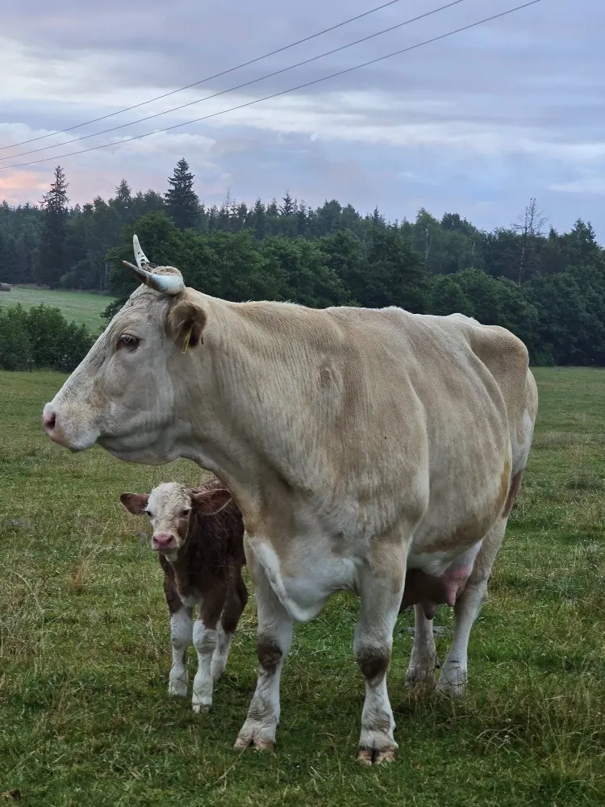

Václavov u Bruntálu
Rodinná farma v podhůří Jeseníků
Pastevní chov masného simentála a pěstování obilovin v režimu ekologického zemědělství.
Tradiční hospodářství, které převzala další generace
Farmu založil jako rodinné hospodářství Ing. Josef Šajnar. Svou část agendy později předal dceři, Ing. Štěpánce Jurinové, která dnes farmu vede jako zemědělský podnikatel.
Od roku 2015 hospodaříme v režimu ekologického zemědělství. Obhospodařujeme louky, pastviny a pole v okolí obce Václavov u Bruntálu, v krajině podhůří Jeseníků, která pastevnímu chovu skotu přirozeně odpovídá.


Masný simentál na pastvě
Hlavním pilířem naší živočišné výroby je chov plemene masný simentál. Plemeno švýcarského původu vyniká mohutným tělesným rámcem a vysokou masnou užitkovostí.
Skot chováme pastevně. Krávy s telaty se pasou na loukách v okolí farmy.
-
Plemeno
Masný simentál
-
Původ plemene
Švýcarsko
-
Způsob chovu
Pastevní, v ekologickém režimu
Obiloviny z vlastních polí
Na orné půdě pěstujeme především obiloviny na zrno. Rostlinnou výrobu doplňuje pěstování dalších netrvalých plodin, množení rostlin a podpůrné činnosti po sklizni.


-
Obiloviny na zrno
Hlavní plodina na orné půdě farmy.
-
Netrvalé plodiny
Jednoleté plodiny pěstované v osevním postupu.
-
Množení rostlin
Rozmnožovací činnost v rostlinné výrobě.
-
Posklizňové činnosti
Úprava a příprava sklizené produkce.
Kontakt
Máte dotaz k chovu nebo k naší produkci? Napište nám nebo zavolejte.